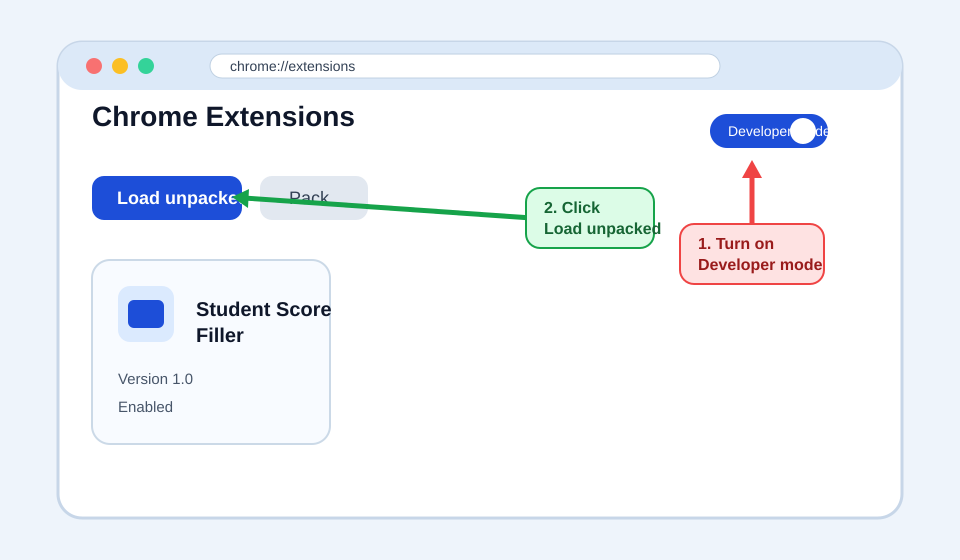
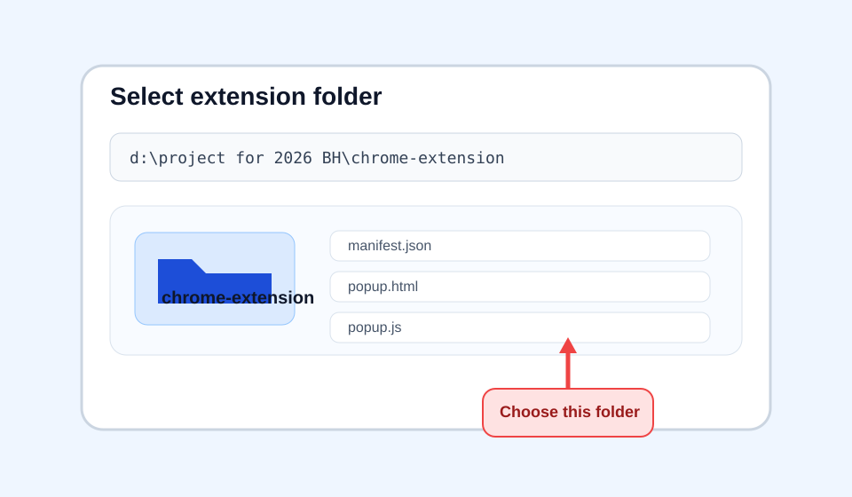
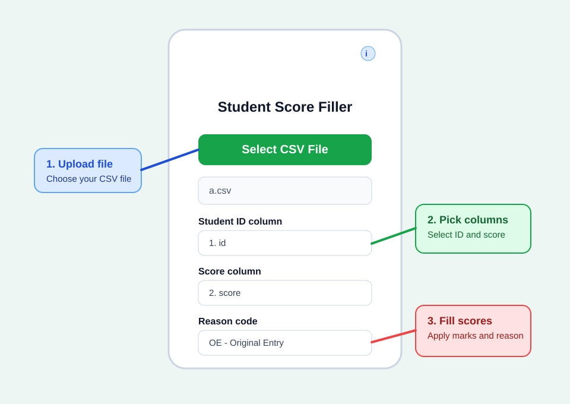
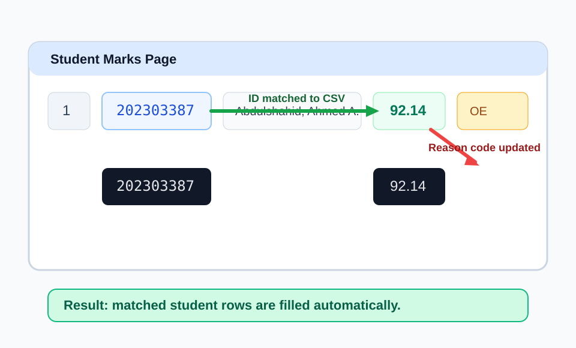

Student Score Filler
Guide for loading the extension into Chrome and using it to fill student scores.
Developed by Dr. Ayman Al-Ani
1. What This Extension Does
This extension helps you fill student marks on a web page automatically.
- It reads a CSV file that contains student IDs and scores.
- It matches each student ID from the file with the student ID shown on the page.
- It fills the score input box for each matched student.
- It can also set the same reason code for all students.
2. How To Load The Extension Into Chrome
Step 1: Open the Extensions Page
Open Chrome and go to chrome://extensions.

Step 2: Select the Extension Folder
After clicking Load unpacked, choose the chrome-extension folder from your computer.

d:\project for 2026 BH\chrome-extension
Step 3: Pin the Extension
Click the puzzle icon in Chrome, then pin Student Score Filler so it is easy to open later.
3. How To Use The Extension
Step 1: Open the Marks Page
Open the web page that contains the student table and the score input boxes.
Step 2: Open the Extension Popup
Click the Student Score Filler icon in Chrome.

Step 3: Select the CSV File
Click Select CSV File and choose your file.
id,score 202303387,92.14 202303552,85.71 202302918,73.81
Step 4: Choose the Correct Columns
After the file is loaded, choose:
- The column that contains the student ID
- The column that contains the score
If the file came from Excel and has more than two columns, this step lets you select the correct ones.
Step 5: Choose the Reason Code
Select one reason code. The extension will apply this code to all students on the page.
Step 6: Click Fill Scores
The extension will fill matched students automatically and then show a result message.
4. What Happens On The Page

When the extension runs:
- It scans the table rows on the page.
- It compares each row's student ID with the IDs in the CSV file.
- For each match, it fills the score input box.
- It also changes all reason-code dropdowns to the selected value.
5. Troubleshooting
Check that the first row contains column names and that you selected the correct ID and score columns.
This usually means those student IDs were not found on the current page.
Go back to chrome://extensions, make sure Developer mode is enabled, and reload the extension.
The ID column, score column, and reason code options appear only after a file is selected.